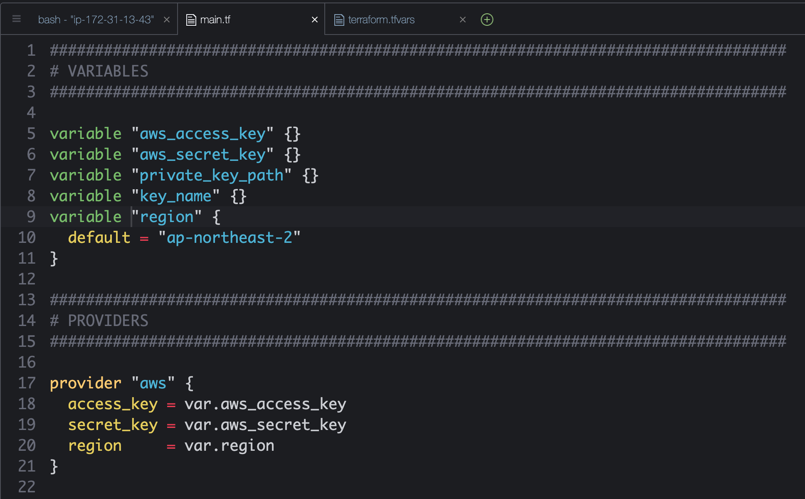

Provisioning AWS Infrastructure
for Continuous Delivery
with Terraform
ITSS DevOps, SMIC 2020

Let's Get Started!
What you need to know about
Infrastructure as Code
- Defined in code
- Stored in source code
- Declarative or Imperative
Declarative or Imperative
Make me a Taco
- get shell
- get beef
- get cheese
- get lettuce
- get salsa
Declarative or Imperative
Make me a Taco
food taco "bean-taco" {
}
Declarative or Imperative
Make me a Taco
food taco "bean-taco" {
ingredients = [
"beef", "cheese", "salsa"
]
}
Terraform

is an example of a Declarative approach
in deploying Infrastructure as Code
What does it do?
- Automated Deployment (takes the human out of the equation)
- Consistent environments
- Repeatable process
- Reusable templates/components
- Documented architecture
Developer's Principle

Summary
- IaC isn't scary
- Manual processes are the enemy
- When in doubt, have a taco
- Coming up next...
- Deploy a Terraform Configuration
Deploying your first Terraform Configuration
Install Terraform
** Go to your AWS account; Open and create IDE (Cloud9) in Tokyo region
Download linux platform zipped file, unzip, move to /usr/local/bin
curl https://releases.hashicorp.com/terraform/0.12.5/terraform_0.12.5_linux_amd64.zip -O
unzip terraform_0.12.5_linux_amd64.zip
rm terraform_0.12.5_linux_amd64.zip
sudo mv terraform /usr/local/bin
Confirm Version
terraform --version
*** Create your directory "mkdir tf.terraform-[name]"
Terraform Components
Terraform executable
Terraform files
Terraform plugins
Terraform state
Terraform File
Variables
variable "aws_access_key" {}
variable "aws_secret_key" {}
variable "aws_region" {
default = "ap-southeast-1"
}
Provider
provider "aws" {
access_key = var.aws_access_key
secret_key = var.aws_secret_key
region = var.region
}
RESOURCE
resource "aws_instance" "sample" {
ami = data.aws_ami.alx.id
instance_type = "t2.micro"
}
OUTPUT
output "aws_public_ip" {
value = aws_instance.ex.public_dns
}
Configuration
Configuration
Configuration
Configuration
Configuration
Configuration
Configuration
Configuration
Configuration
.tfvars
Deploying the Configuration
Go to cloud9 of your aws account, region Tokyo!
1. terraform init
2. terraform plan
3. terraform plan -out [name]].tfplan
4. terraform apply [name].tfplan
5. teraform destroy